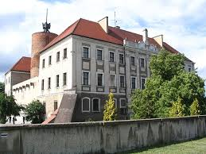

Warmińsko-Mazurskie
Najważniejsze miasta
Olsztyn
Olsztyn to stolica Warmii i Mazur, otoczona licznymi jeziorami i lasami. Najważniejszym zabytkiem miasta jest gotycki Zamek Kapituły Warmińskiej, w którym mieszkał Mikołaj Kopernik. Olsztyn przyciąga turystów nie tylko swoją historią, ale także piękną przyrodą i szlakiem kajakowym rzeki Łyny.Zamek Kapituły Warmińskiej
Gotycka twierdza z XIV wieku, w której pracował Mikołaj Kopernik. Dziś mieści się tu Muzeum Warmii i Mazur, prezentujące historię regionu.Planetarium i Obserwatorium Astronomiczne
Nowoczesne centrum nauki, które pozwala zgłębiać tajniki kosmosu. Regularnie odbywają się tu pokazy gwiezdnego nieba i seanse popularnonaukowe.Jezioro Ukiel
Największe jezioro w Olsztynie, idealne do sportów wodnych i wypoczynku. Na jego brzegu znajdują się plaże, ścieżki spacerowe i wypożyczalnie sprzętu wodnego.Elbląg
Elbląg to jedno z najstarszych miast w Polsce, znane z odbudowanej starówki z charakterystycznymi kamienicami. Przez miasto przepływa rzeka Elbląg, a w pobliżu znajduje się słynny Kanał Elbląski z unikalnym systemem pochylni. Elbląg jest także bramą do Zalewu Wiślanego, co czyni go atrakcyjnym miejscem dla miłośników żeglarstwa.Kanał Elbląski
Unikalny szlak wodny z systemem pochylni, który pozwala statkom "jeździć" po trawie. To jedna z największych atrakcji inżynieryjnych w Polsce i na świecie.Katedra św. Mikołaja
Monumentalna gotycka świątynia z XIV wieku, z wieżą widokową oferującą panoramę miasta. W środku można podziwiać cenne zabytki sztuki sakralnej.Muzeum Archeologiczno-Historyczne
Znajduje się w dawnym kompleksie podzamcza, prezentując bogatą historię Elbląga. Wśród eksponatów są znaleziska z czasów krzyżackich i średniowieczne artefakty.